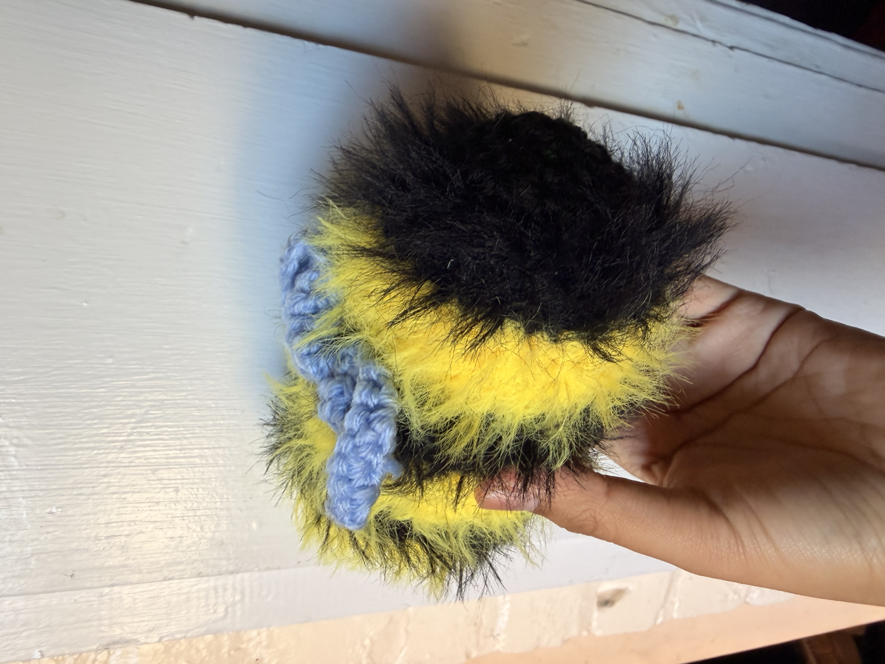
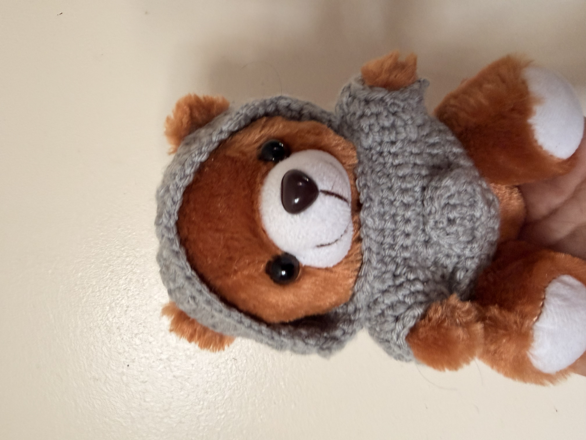
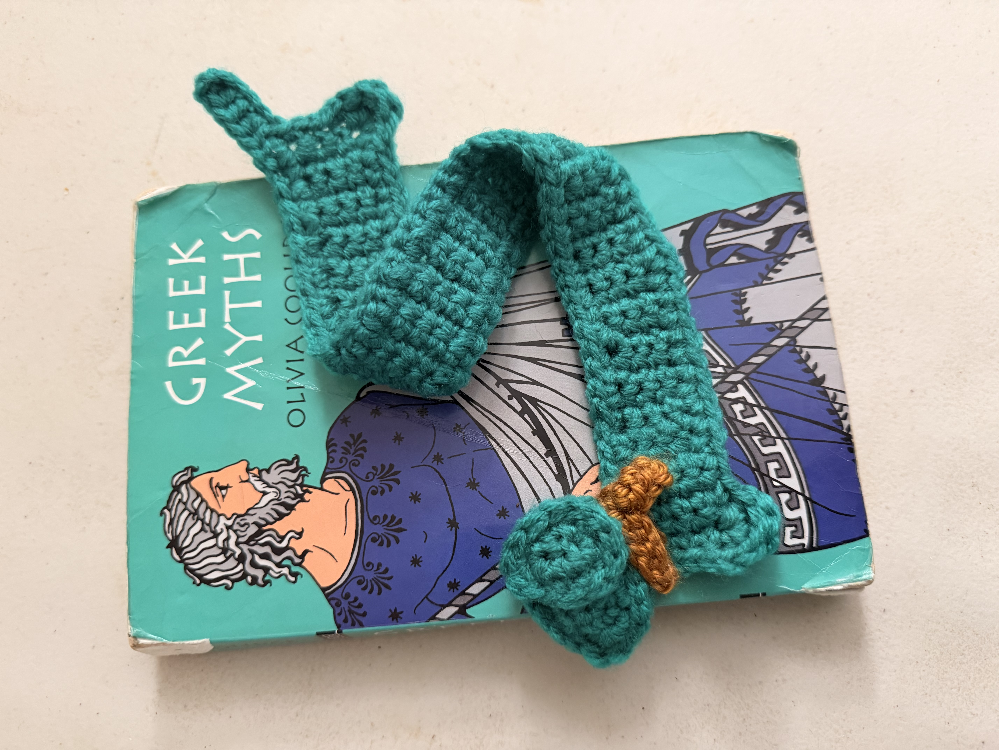
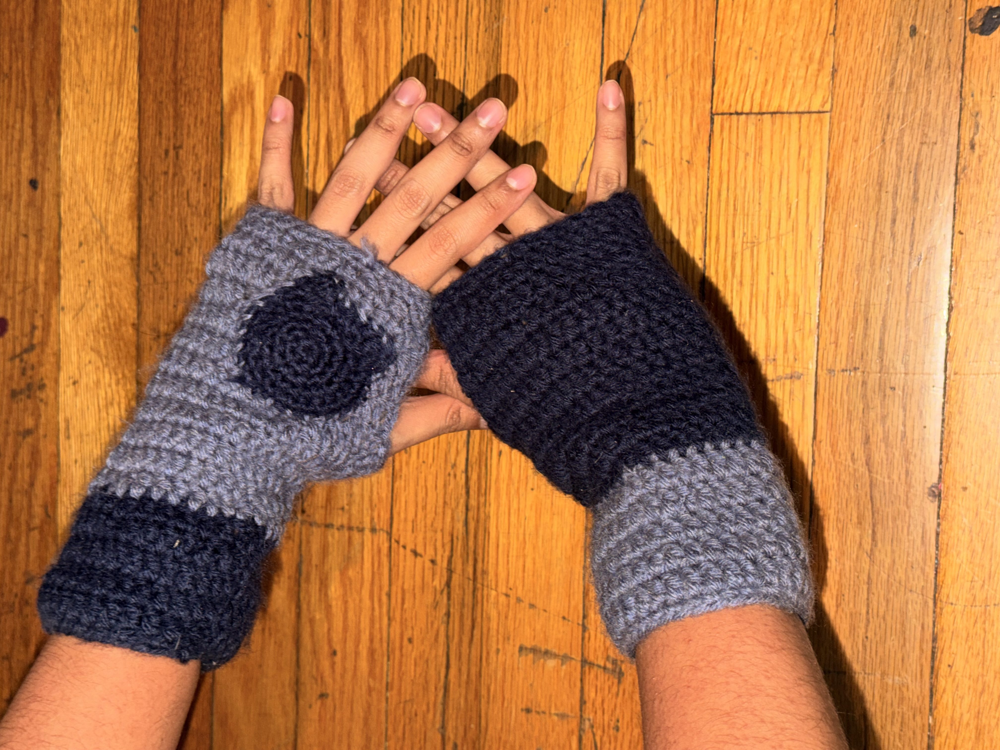
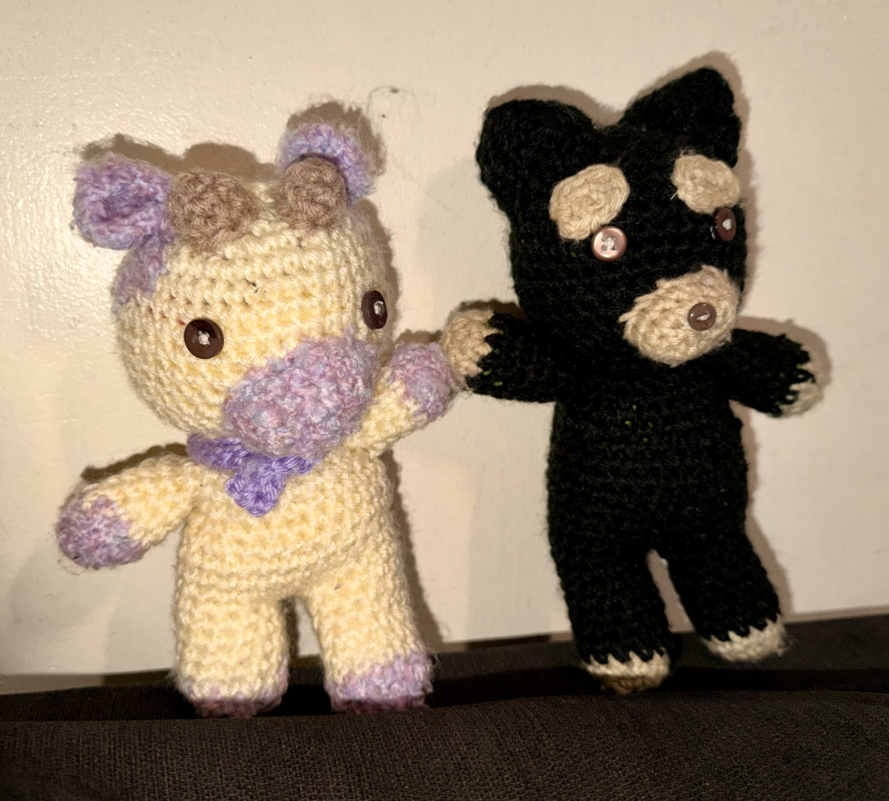

Pattern project examples
To start with, crochet is very versatile and does not define itself in only one set version. These photos of such works of crochet are examples of how much is possible from crochet. There truly is no limit in crochet for creativity so long as you have the skill and yarn supply to back it up, it takes up more yarn than you think most times.
---Pattern project examples---






